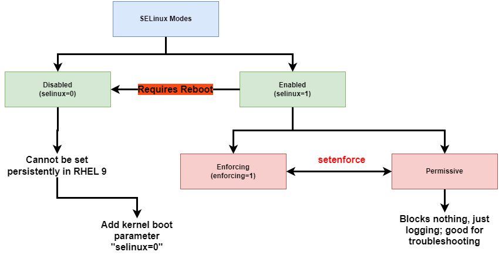
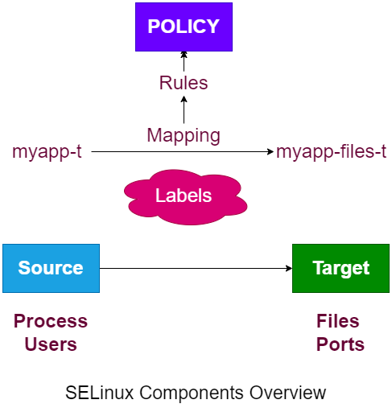

Module 3 Module 4 Module 5 Module 6 Module 7
ssh-keygen creates a public/private key pair for the current user.ssh -X enables X forwarding. Forwarded sessions are subject to X11 security controls.ssh -Y enables trusted X forwarding.
SSH client options can be set persistently in /etc/ssh/ssh_config.
AllowUsers
Do restart ssh service after making any changes.
scp can be used to securely copy files over the network, using the sshd process.scp file1 file2 student@server:/home/studentscp -r root@remoteserver:/tmp/files
sftp offers an FTP client interface to securely transfer files via SSH.
put /my/file to upload a file.get /your/file to download a file to the current directory.exit to close sftp session.-r will recursive sync directory tree.-l sync symlinks.-p perserves symlinks.-n will do a dry run before actually syncing-a uses archive mode, which equivalent to -rlpngoD-A uses archive mode and also sysnc ACLs-X will sync SELinux context as well.
- getenforce shows current SELinux state.
- setenforce allows to change SELinux mode from permissive to enforcing and vice versa.
[root@rhcsaserver html]# getenforce Enforcing [root@rhcsaserver html]# setenforce permissive [root@rhcsaserver html]# getenforce Permissive [root@rhcsaserver html]# setenforce enforcing [root@rhcsaserver html]# getenforce Enforcing [root@rhcsaserver html]# setenforce 0 [root@rhcsaserver html]# getenforce Permissive [root@rhcsaserver html]# setenforce 1 [root@rhcsaserver html]# getenforce Enforcing
selinux=1 enabled SELinux.
Access the grub boot loader prompt to change these settings while booting.
Ports
The SELinux policy has many rules to define which source context has access to which target context.

type: flags which type of operation is allowed on this object.
In most configurations, only context type matters, so you can safely ignore user and role for RHCSA
Many commands support a -Z option to show current context information.
[root@rhcsaserver ~]# cp /etc/hosts hosts [root@rhcsaserver ~]# ls -Z /etc/hosts hosts system_u:object_r:net_conf_t:s0 /etc/hosts unconfined_u:object_r:admin_home_t:s0 hosts [root@rhcsaserver ~]# mv hosts /var/www/html [root@rhcsaserver ~]# ls -Z /etc/hosts /var/www/html/hosts system_u:object_r:net_conf_t:s0 /etc/hosts unconfined_u:object_r:admin_home_t:s0 /var/www/html/hosts
semanage fcontext -a to set a new context label.Use semange fcontext -m to modify an existing context label.
To enforce the policy setting on the file system., use restorecon.
[root@rhcsaserver ~]# restorecon -Rv /var/www/html Relabeled /var/www/html/hosts from unconfined_u:object_r:admin_home_t:s0 to unconfined_u:object_r:httpd_sys_content_t:s0
touch /.autorelabel to relabel all files to the context that is specified in the policy.man semanage-fcontext for documentation.semenage fcontext -I -C to show only settings that have changed in the current policy./etc/httpd/conf/httpd.conf.curl localhost. Should give apache test page.[root@rhcsaserver ~]# setenforce 0 [root@rhcsaserver ~]# curl localhost hello this is index.html at /web
[root@rhcsaserver ~]# grep AVC /var/log/audit/audit.log type=AVC msg=audit(1673277029.122:824): avc: denied { getattr } for pid=42132 comm="httpd" path="/web/index.html" dev="dm-0" ino=52200 scontext=system_u:system_r:httpd_t:s0 tcontext=unconfined_u:object_r:default_t:s0 tclass=file permissive=0 type=AVC msg=audit(1673277029.122:825): avc: denied { getattr } for pid=42132 comm="httpd" path="/web/index.html" dev="dm-0" ino=52200 scontext=system_u:system_r:httpd_t:s0 tcontext=unconfined_u:object_r:default_t:s0 tclass=file permissive=0 type=AVC msg=audit(1673277046.548:830): avc: denied { getattr } for pid=42132 comm="httpd" path="/web/index.html" dev="dm-0" ino=52200 scontext=system_u:system_r:httpd_t:s0 tcontext=unconfined_u:object_r:default_t:s0 tclass=file permissive=1 type=AVC msg=audit(1673277046.548:831): avc: denied { read } for pid=42132 comm="httpd" name="index.html" dev="dm-0" ino=52200 scontext=system_u:system_r:httpd_t:s0 tcontext=unconfined_u:object_r:default_t:s0 tclass=file permissive=1 type=AVC msg=audit(1673277046.548:831): avc: denied { open } for pid=42132 comm="httpd" path="/web/index.html" dev="dm-0" ino=52200 scontext=system_u:system_r:httpd_t:s0 tcontext=unconfined_u:object_r:default_t:s0 tclass=file permissive=1 type=AVC msg=audit(1673277046.548:832): avc: denied { map } for pid=42132 comm="httpd" path="/web/index.html" dev="dm-0" ino=52200 scontext=system_u:system_r:httpd_t:s0 tcontext=unconfined_u:object_r:default_t:s0 tclass=file permissive=1
[root@rhcsaserver ~]# semanage fcontext -a -t httpd_sys_content_t "/web(/.*)?" [root@rhcsaserver ~]# restorecon -Rv /web Relabeled /web from unconfined_u:object_r:default_t:s0 to unconfined_u:object_r:httpd_sys_content_t:s0 Relabeled /web/index.html from unconfined_u:object_r:default_t:s0 to unconfined_u:object_r:httpd_sys_content_t:s0 [root@rhcsaserver ~]# setenforce 1 [root@rhcsaserver ~]# curl localhost hello this is index.html at /web
sealert.man semanage-port for examples.semanage port -lsemanage port -a -t http_port_t -p tcp 81semanage port -a -t ssh_port_t -p tcp 8991semanage boolen -l or getsebool -a.setsebool -P boolean [on|off\].sealert is available, it interprets messages from the audit log, applies SELinux AI, and writes meaningful messages to /var/log/messages.setenforce 0 and try again. If it works now, you have confirmned that SELinux is blocking the requested activity.grep AVC /var/log/audit/audit.log to see raw audit messages. Look at the source context and the target context.dnf install selinux-policy-doc for additional man pages, and try to understand what you need to do.journalctl | grep sealert and read the alert message that was generated.ss is the standard tool to show socket information.ss will show all connections.ss -tu shows connnected TCP and UDP sockets.ss -tua adds sockets that are in listening state.ss -tln shows TCP sockets that re in listening state only, without resolving host names.ss -tulpn shows TCP and UDP sockets in listening state, and adds process name or PID to the output.[root@rhcsaserver ~]# ss -tunapl Netid State Recv-Q Send-Q Local Address:Port Peer Address:Port Process udp UNCONN 0 0 0.0.0.0:111 0.0.0.0:* users:(("rpcbind",pid=1057,fd=5),("systemd",pid=1,fd=43)) udp UNCONN 0 0 127.0.0.1:323 0.0.0.0:* users:(("chronyd",pid=1272,fd=5)) udp UNCONN 0 0 0.0.0.0:5353 0.0.0.0:* users:(("avahi-daemon",pid=1192,fd=12)) udp UNCONN 0 0 0.0.0.0:60927 0.0.0.0:* users:(("avahi-daemon",pid=1192,fd=14)) udp UNCONN 0 0 [::]:111 [::]:* users:(("rpcbind",pid=1057,fd=7),("systemd",pid=1,fd=47)) udp UNCONN 0 0 [::1]:323 [::]:* users:(("chronyd",pid=1272,fd=6)) udp UNCONN 0 0 [::]:5353 [::]:* users:(("avahi-daemon",pid=1192,fd=13)) udp UNCONN 0 0 [::]:50433 [::]:* users:(("avahi-daemon",pid=1192,fd=15)) tcp LISTEN 0 4096 0.0.0.0:111 0.0.0.0:* users:(("rpcbind",pid=1057,fd=4),("systemd",pid=1,fd=42)) tcp LISTEN 0 128 0.0.0.0:22 0.0.0.0:* users:(("sshd",pid=1460,fd=3)) tcp LISTEN 0 128 127.0.0.1:631 0.0.0.0:* users:(("cupsd",pid=1457,fd=7)) tcp LISTEN 0 4096 [::]:111 [::]:* users:(("rpcbind",pid=1057,fd=6),("systemd",pid=1,fd=44)) tcp LISTEN 0 511 *:82 *:* users:(("httpd",pid=4721,fd=4),("httpd",pid=4720,fd=4),("httpd",pid=4719,fd=4),("httpd",pid=4717,fd=4)) tcp LISTEN 0 128 [::]:22 [::]:* users:(("sshd",pid=1460,fd=4)) tcp LISTEN 0 128 [::1]:631 [::]:* users:(("cupsd",pid=1457,fd=6))
port forwarding
Netfilter forwards specific operations to kernel modules
nftables is the framework that applies firewalling.firewalld is a service managed by systemd, which RHEl uses as the front end to manage nftables firewalls.[root@rhcsaserver ~]# firewall-cmd --list-all public (active) target: default icmp-block-inversion: no interfaces: ens160 sources: services: cockpit dhcpv6-client ssh ports: protocols: forward: yes masquerade: no forward-ports: source-ports: icmp-blocks: rich rules:
firewall-cmd command is used to write firewall configuration.--permanent to write to persistent (but not to runtime).--permanent the rule is written to runtime. (but no persistent).firewall-cmd --get-servicesfirewall-cmd -add-service httpdfirewall-cmd --add-service httpd --permanenthwclock is used to set hardware time.hwclock --systohchwclock --hctosys
date is use to show and set time.
timedatectl is used to manage time and time zone configuration.
timedatectl is a new utility that allows you to manage all aspects of system time.
timedatectl status will show all time properties currently used.timedatectl set-time change time.timedatectl set-timezone change timezone.timedatectl set-ntp enables or disables ntp time synchronization.
To sync time using NTP, an NTP service must be configured.
Use iburst to permit fast synchronization.
After modifying its contents use systemctl restart chronyd to restart the chronyd service.
Configure your system to sync time with ther servers in pool.ntp.org.
Answer: In /etc/chrony.conf, add/replace this pool pool.ntp.org iburst. Restart the chronyd service.
nfs-utils package is installed.showmount -e nfsserver to show exports.mount nfs_server_name:/share /mnt to mount.mount to verify./data /etc/auto.nfsdata
In /etc/auto.nfsdata you'll identify the subdirectories on which to mount and what to mount exactly.
files -rw nfsserver:/nfsdata
Ensure the autofs service is started:
TIP: check /etc/auto.misc for syntax examples on the exam.
Images are provided through images registries.
Continers rely on features provided by the Linux operating sytem
SELinux enforces security.
Containers need a user ID to be started on the host computer.
Rootless containers can generate a UID dynmaically or be preconfigured to use a specific UID.
Rootless containers have a few limitations:
Can't bind to privileged network ports.
Complex applications are typically composed of multiple containers.
The OCI standard gurantees compatibility so that images can be used in different environments, like podman on RHEL or docker.
Container images are offered through registries.
registry.connect.redhat.com is for third-party products.
Red Hat container catalog (https://catalog.redhat.com) is a web interface to the Red Hat images.
podman login registry.redhat.io to login to a registry.podman login registry.redhat.io --get-login to get your current login credentialscontainer-tools package.